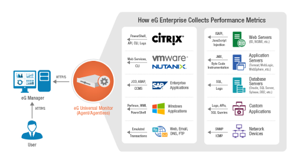
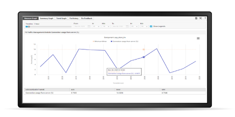
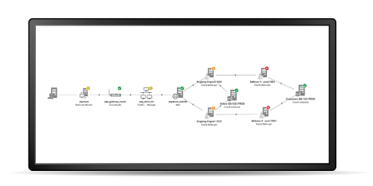
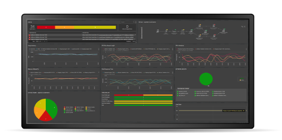

eG ENTERPRISE
애플리케이션 성능부터 IT 인프라 환경까지 End-to-End 통합 모니터링 솔루션,
클라우드와 가상화 환경하의 애플리케이션에 대한 통합 모니터링, 진단 및 보고서
-
애플리케이션 성능 모니터링(APM)
코드 레벨까지 상세한 문제점 해결/ Java, .NET 애플리케이션 지원
-
엔터프라이즈 애플리케이션 Monitoring
DBMS, TP-Monitor, ERP 등 멘터프라이즈급 애플리케이션 모니터링
-
VDI Monitoring
Citrix, VMWare 등 현존하는 모든 VDI 환경과 개별 VM까지 모니터링
-
통합 모니터링
하나의 플랫폼으로 NMS/SMS/APM/DPM 의 역할을 수행
시간당손실액 1억원이 발생하는 삼성14개 계얼사 SAP 표준 모니터링 플랫폼
eG ENTERPRISE 특장점
-
End-to-End 성능의 가시성
eG Enterprise를 사용함으로써, IT 인프라의 모든 레이어와 모든 티어를 모니터링 할 수 있으며, 애플리케이션, 사용자 경험, 물리적 또는 서버 / 네트워크 / 스토리지 등으로 구성된 가상화 환경의 서비스 가용성 또는 비즈니스 생산성에 대한 통찰력을 높일 수 있습니다. 통합 단일 모니터링 솔루션으로 전체 인프라를 모니터링 합니다.
-
자동 근본원인 분석
자동 근본원인분석을 활용함으로써 eG Enterprise는 성능 이슈에 대한 발견, 분석과 해결을 가속화 시킵니다. 하루정도 걸렸던 문제점을 수분내로 해결하여 IT 운영팀을 문제 해결 보다는 다른 일로 더 생산성을 높일 수 있습니다.
-
문제의 우선순위 검출과 알람
eG Enterprise는 무선적인 모니터링, 정확한 검출 그리고 빠른 성능 이슈 해결하여 사용자가 장애를 인지하지 않습니다. 자가학습(Self-Learning), 상관관계 룰, 지능적인 알람은 IT 운영팀이 성능 이슈, 실정 변경, 비정상적 사용과 추이를 능동적으로 인지하여 조치하도록 합니다.
주요 기능
eG Enterprise는 높은 수준의 서비스 가용성 제공, 운영자의 생산성과
만족성, 운영비용 절감, 효율적인 용량 실계 및 IT 인프라의 최적화 등을 제공함에 있습니다.
-

통합 모니터링 에이전트
eG의 universal agent 모델은 단일 Agent로 180여개의 애플리케이션, 10개이상의 OS, 10개 이상의 가상화 컴퓨팅 환경을 모니터링 합니다. 단일 Agent 는 관리의 편의성과 별도의 모니터링을 위한 Agent를 실치할 필요성이 없습니다.
배포의 편의성: eG 는 애플리케이션과 서버의 모니터링을 위해서 중앙 콘솔에서 실시간 실정합니다.
서버 또는 OS 단위의 라이센스 정책 - 프로세스나 코어 또는 애플리케이션에 따른 라이센스가 아니기 때문에 비용절감의 효과가 있습니다. -

360˚ 전반적 성능과 시각적인 분석
오늘날 가상화 환경을 포함한 IT인프라 환경은 급변하는 서비스로 인해 더욱더 복잡하게 변화하고 있으며, 대부분의 임계치는 시간(일별, 주간별,월별)에 따라 다양하며 수동적으로 설정할 수 없을 정도로 변화하고 있습니다.
eG Enterprise는 360˚ 전반적 성능의 시각화와 최종 사용자에게 영향을 미치는 네트워크, 스토리지, 가상화, 어플리케이션과 데이터베이스들의 자동상관관계를 제공합니다. -

문제원인의 자동분석
현재 모든 IT 인프라는 높은 상호의존성을 지니고 있기 때문에, 하나의 작은 문제가 다른 큰 문제를 일으킬 수 있습니다. 또한 새로운 상호의존성들은 가상화, 콜라무드 컴퓨팅 등 새로운 환경에서 더욱더 발생하고 있습니다.
eG Enterprise는 근본원인 분석 기술(상호상관관계)을 가상화, 애플리케이션 대 애플리케이션, 애플리케이션 대 VM, VM-어플리케이션등 다양한 환경에 적용했습니다. eG Enterprise는 서로 다른 레벨의 성능 알람들의 상관관계를 분석하여 문제의 원인을 자동적으로 파악합니다. 이로써, 장시간 걸리던 문제 해결을 신속하게 파악하여 조치하도록 합니다. -

대시보드와 보고서
eG Enterprise는 조직내 여러 담당자들을 위한 커스터마이징이 가능한 뷰를 제공합니다. 담당자들은 대시보드를 실시간으로 작성하고 즉시 관제할 수 있습니다 전반적인 모니터링 뷰들은 요구사항과 신속한 파악을 위해서 작성합니다.
eG Enterprise는 종합적으로 사전 정의된 보고서를 제공하며, 보고서를 커스터마이징 할 수 있습니다. 관리자는 eG Enerprise의 서비스 보고서를 통해서 주의 깊게 살펴봐야할 부분이 어디인지를 쉽게 판별하고, IT 관리자는 인프라 단계의 성능 부분을 검토합니다. 아키텍트는 추세와 예측 보고서를 통해서 비용절감 및 최적화를 할 수 있는 부분을 쉽게 파악합니다.
모니터링 범위
eG Enterprise는 하나의 모니터링으로 모든 IT를 관리할 수 있습니다.
-
Real User Monitoring
- 실사용자 응답시간 측정(웹 브라무저, 모바일 환경)
-
Cloud Monitoring
- Private/Public Cloud 모니터링
- AWS, MS-Azure 등 모니터링
-
Virtualization Monitoring
- 모든 가상화 환경을 모니터링
- 서버 가상화 / 클라이언트 가상화
-
Virtual Desktop Monitoring
- VMWare, Citrix Ready 인증
- VDI 모니터링에 대한 Template 지원
-
Java Monitoring
- Java Application 성능의 영향도 가시화
- JVM에 대한 성능분석
- Application에 대한 Tracing
-
Enterprise Application Monitoring
- ERP, CRM, TP-Monitor등 Enterprise Application 모니터링
-
Application Performance Monitoring
- 실사용자 응답시간 측정(웹 브라무저, 모바일 환경)
-
Citrix Monitoring
- Citrix XenApp, Servers, Service 모니터링
- Citrix Network Device 모니터링 및 관제
-
Network Monitoring
- SNMP MIB-11 호환 장비
- Cisco routerd의 NetFlow
- SNMP Trap
-
Server Monitoring
- 10여개 이상의 OS
- 이 기종 HW, OS에 대한 개별적인
- Layer 모델 제시
-
Storage Monitoring
- 현존하는 모든 Storage 지원
- Fiber Channel Switch, HST Port, Controller 등 세부 모니터링
-
Database Monitoring
- 상용 DB, Open DB 지원
- DB에 대한 지능적인 분석을 제공
eG Enterprise는 단일플랫폼, 자동상관관계, 자동 분석하는 유일한 모니터링 솔루션입니다.
- eG Enterprise만이 성능 문제에 대해 사실에 근거한 응답을 자동으로 제공합니다.
- 가상화 환경과 단일 서버들간의 모든 관계에 대한 가시성을 제공합니다.
- 특허인 지능적 상관관계를 이용해서 성능 문제점을 자동적으로 판단합니다.
- 현재 핵심이 되는 이슈, 관계, 프로세스들을 파악합니다.
- 최종사용자의 응답속도 측정과 IT 의 효율성을 극대화를 위한 정보를 제공합니다.